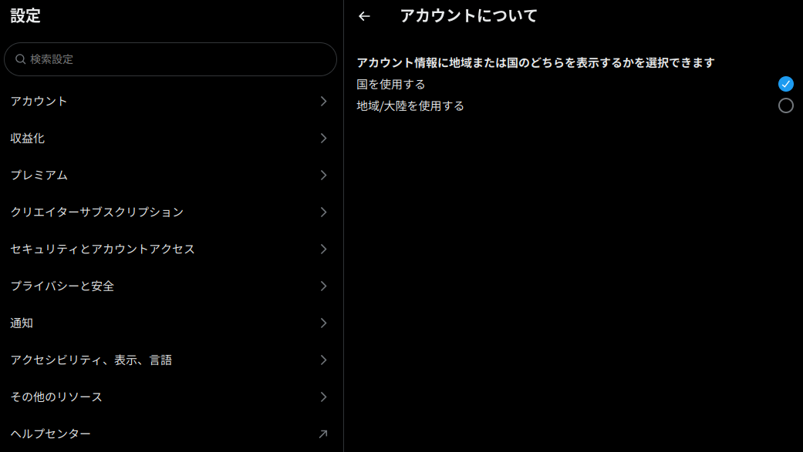
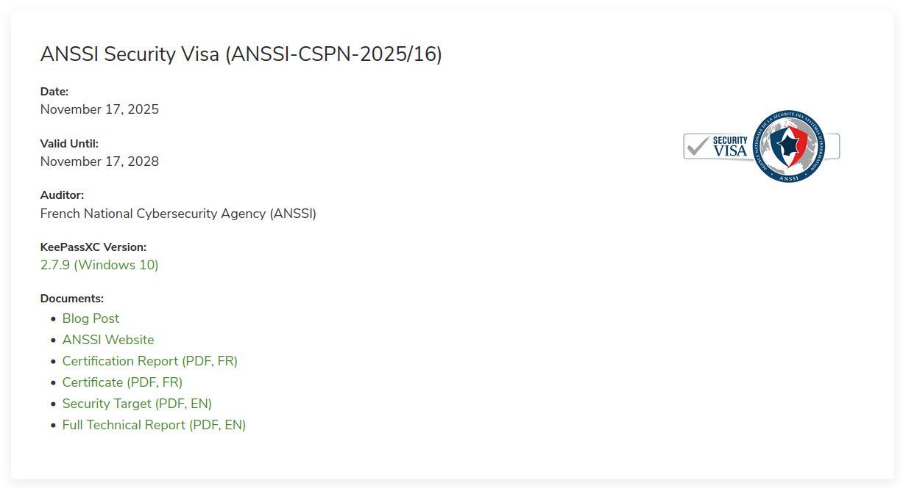

諸々の雑感（2025-11-26 の戯れ言）

Orion ブラウザがバージョン 1.0 に到達
Orion ブラウザは WebKit ベースの Web ブラウザで，ゼロテレメトリ，ユーザのプライバシー優先の設計を謳っている。
- A lean, native codebase without ad‑tech bloat.
- Optimized startup, tab switching, and page rendering.
- A UI that gets out of your way and gives you more screen real estate for content.
- Zero Telemetry: We don’t collect usage data. No analytics, no identifiers, no tracking.
- No ad or tracking technology baked in: Orion is not funded by ads, so there is no incentive to follow you around the web.
- Built‑in protections: Strong content blocking and privacy defaults from the first launch.
生成 AI への態度も明確で1
- We are not against AI, and we are conscious of its limitations. We already integrate with AI‑powered services wherever it makes functional sense and will continue to expand those capabilities.
- We are against rushing insecure, always‑on agents into the browser core. Your browser should be a secure gateway, not an unvetted co‑pilot wired into everything you do.
とした上で，実装としては
- Orion ships with no built‑in AI code in its core.
- We focus on providing a clean, predictable environment, especially for enterprises and privacy‑conscious professionals.
- Orion is designed to connect seamlessly to the AI tools you choose – soon including Kagi’s intelligent features – while keeping a clear separation between your browser and any external AI agents.
ということだそうだ。
個人的には Web ブラウザのコア機能として AI を組み込むのは時期尚早だと思っているので，上述の実装方針には共感する。 とはいえ AI 機能自体は便利に使っていて，たとえば Firfox 組み込みの AI 機能は使ってないけど “Kagi Search for Firefox” (表示ページの内容を要約してくれる) や “Kagi Translate” といった拡張機能はかなり積極的に使っている（お金払ってるんだから使わにゃ損）。
Orion ブラウザは現在 macOS, iOS/iPadOS 版が提供されていて Linux 版はアルファ版がある。 Windows 版は開発中とのこと。 私は外出用の MacBook Air には既に入れているのだが macOS の機能は殆ど使ってないからなぁ。
Linux 版のアルファが取れる日をお待ちしています。
Firefox 145 で追加されたプライバシー保護関連機能
記事を読んでもちょっと何言ってるか分からないのだが（自画自賛？）
Firefox’s new protections are a balance of disrupting fingerprinters while maintaining web usability. More aggressive fingerprinting blocking might sound better, but is guaranteed to break legitimate website features. For instance, calendar, scheduling, and conferencing tools legitimately need your real time zone. Firefox’s approach is to target the most leaky fingerprinting vectors (the tricks and scripts used by trackers) while preserving functionality many sites need to work normally. The end result is a set of layered defenses that significantly reduce tracking without downgrading your browsing experience.
と書かれている。 Firefox を使ってる人は，この機会に「プライバシーとセキュリティ」の設定を見直してみるといいかもしれない。
Firefox のこういうところは悪くないと思うのだが，イマイチ信用しきれんのだよなぁ。
𝕏 プロファイルの所在地をボカしてみる
最初は NHK の 𝕏 アカウントが US になってるという話を聞いて，これこそ「ちょっと何言ってるか分からない」だったが，どうもプロファイルに表示されるようになった「アカウントの所在地」の話らしい。
プロファイルより
ちっ。私は日本在住か。 いや，合ってるけど。
これに端を発して，なかなかに愉快なことになってるようだ。
あまり真面目に読む気がなかったので Kagi Assistant に要約させたのだが
- 機能の説明：「このアカウントについて」はアカウント作成国やユーザー名の変更履歴などを表示する新機能です。
- 発見された事実：アメリカの愛国者を名乗る多くのプロMAGAアカウントが、実際にはナイジェリア、ロシア、インド、タイなど外国を拠点にしていることが明らかになりました。
- 表示の問題：ただし、この機能には誤表示や不正確なラベル付けも確認されており、すべての情報が信頼できるわけではありません。
- 著者の主張：筆者は、X（旧Twitter）がエンゲージメントと利益を優先することで、政治的分断や偽情報を増幅し、プラットフォームを「価値のない、毒された万華鏡」のような状態に変えていると論じています。
- 結論：この事例は、真実や安全性よりも利益を優先するソーシャルメディア全体に共通するより大きな問題の一端であると結ばれています。
これで合ってる？
間違いや不正確な情報を元にどれだけ騒ぎ立てても1ミリも説得力がないと思うのだが，やっぱ 𝕏 は碌でもないということは分かる。
𝕏 のリージョン・チェックがどうなってるか知らないが（壊れてるようにしか見えないけど），表示を緩和させることはできるらしい（完全に隠すことはできない）。
これによると「設定とプライバシー」から「プライバシーと安全」を選択し，更に「アカウントについて」を選択すると以下の画面が表示される。

プロファイルより
ここで「地域/大陸を使用する」を選択すると
プロファイルより
おおっ。 所在地が “East Asia & Pacific” になった。 まぁ，大陸レベルで誤魔化したい場合（あるいは大陸を跨いで間違えてる場合）は，これでもダメだろうけど。
なんでこんなこと始めたのかね。 意味のない情報だよな。 GitHub みたいに時差を表示してくれるんならまだ分かるけど。 あれか。 米国とそれ以外を区別しようとしてるのかな？ かの国は「アメリカ・ファースト」らしいし。 でもそれで間違った情報をばらまいてるならしょうがないな（笑）
ちなみに私の 𝕏 アカウントは認証されてません。 お金を払ってない（払う気がない）ので。
KeePassXC 2.7.9 が ANSSI のセキュリティビザを取得
KeePassXC 2.7.11 がリリースされた。
この中で， Windows 版 KeePassXC 2.7.9 がフランスの国立情報システムセキュリティー庁（Agence Nationale de la Sécurité des Systèmes d’Information; ANSSI）の第一級セキュリティ認証（Certification de Sécurité de Premier Niveau; CSPN）に合格し，セキュリティビザを取得したと書かれている。

このセキュリティビザ取得により KeePassXC は，今後3年間 ANSSI の後援を受けられるそうな。
ANSSI はフランスにおいて暗号製品の政府調達にも関わってるセクションらしい。 以下のドキュメントにフランスの暗号関連の認証・調達に関する解説が載っている。
また，セキュリティビザに関しては以下をどうぞ。
ブックマーク
-
この件については拙文「「LLM は詭弁家である」」も参考にどうぞ。 ↩︎